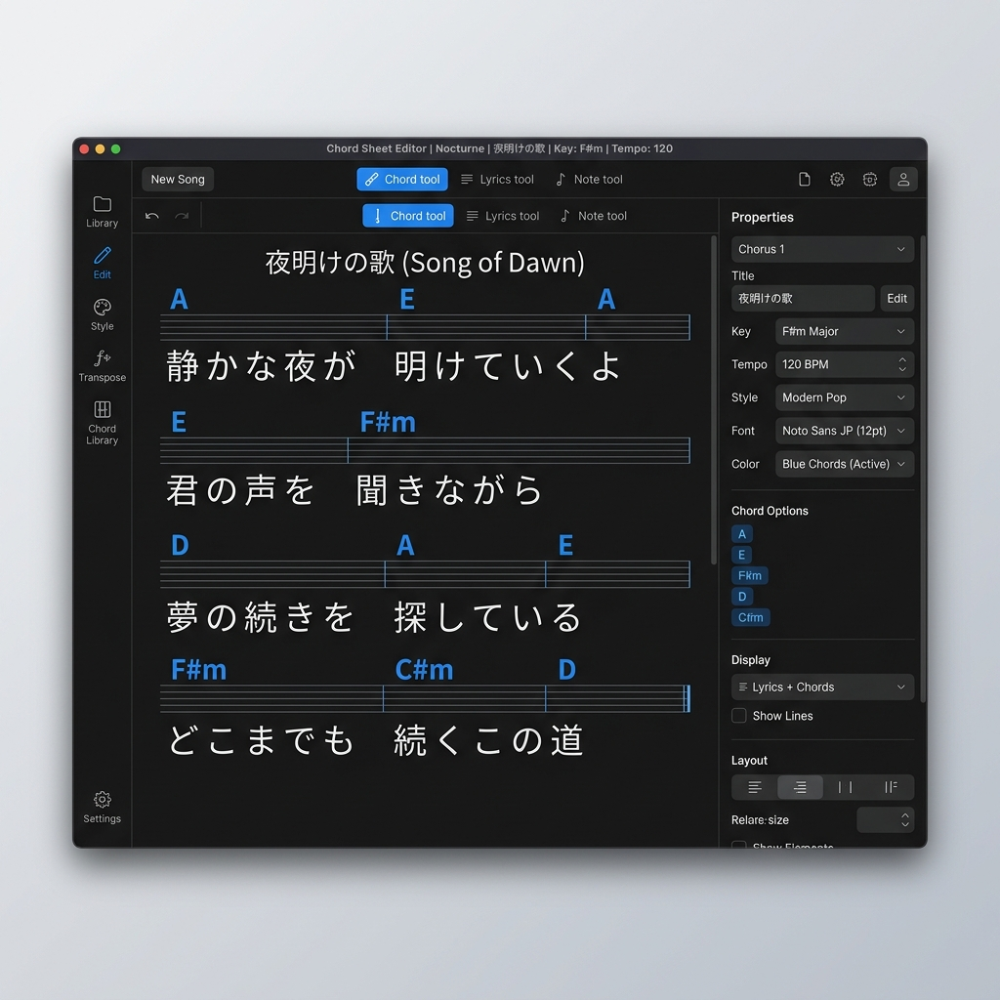
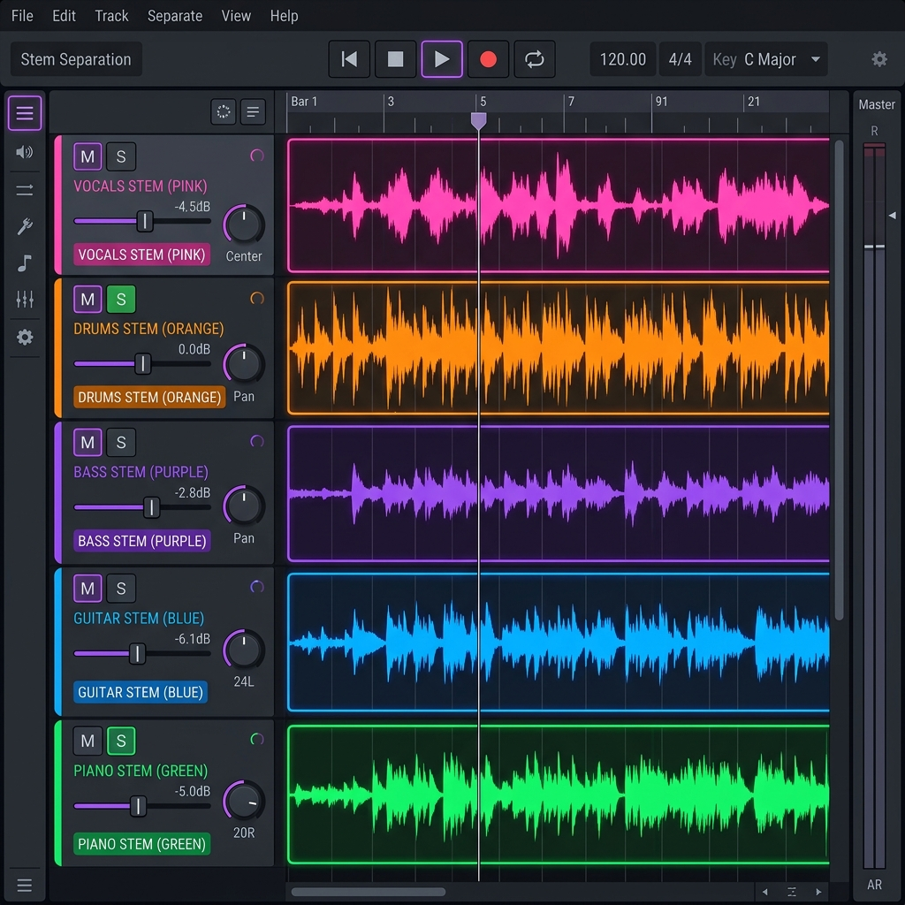

Chord chart editor with ruby annotations for Japanese lyrics, and AI-powered audio stem separation — built for the musicians who play, practice, and create.

A WYSIWYG chord chart editor designed for live musicians. Paste lyrics, drop chords inline, add ruby annotations for Japanese — all from the browser.
Separate vocals, drums, bass, guitar, and piano from any audio track using the Demucs neural network. Built as a native desktop workstation.

Two tools, one mission — help you play better.
Place chords directly above lyrics. Move, adjust X/Y offset, and set beats per chord — all visually.
One-click PDF export with professional typesetting. Supports A4 dual-column and custom margins.
Add furigana or dictionary meanings above kanji. Perfect for Japanese songs and language learning.
Isolate vocals, drums, bass, guitar, and piano using Meta's Demucs model — all running locally.
Built-in multi-track player with mute/solo per stem. Includes a Smart Click metronome for practice.
All your data in localStorage or on disk. No accounts, no cloud, no tracking. Your music stays yours.